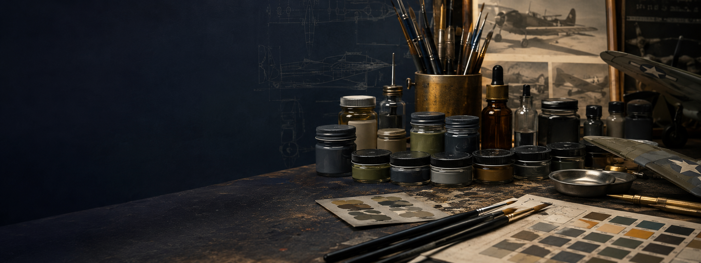
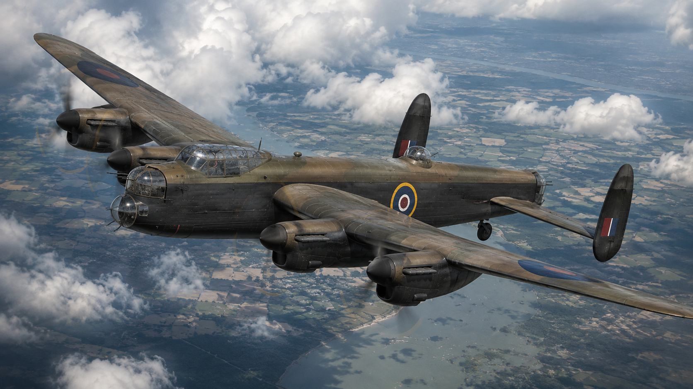

Popular Aircraft Guides
View allPaint Codes & References
Cross-match RAF, Luftwaffe, USAAF, IJN, IJAAF, VVS and Regia Aeronautica colours using practical modelling equivalents and theatre notes.
View paint codes
Kits & Markets
Build routes, sprues, aftermarket priorities and practical buying guidance from a modeller’s bench rather than a plain list.
Browse kits
Books & References
Reference shelves, camouflage guides, aircraft monographs and story-driven reading routes for your next World War II aircraft build.
View books